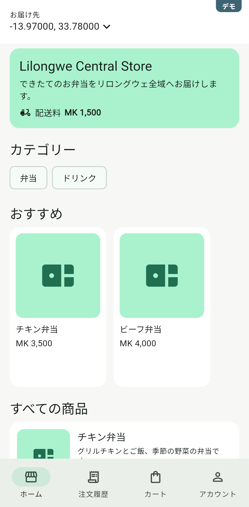
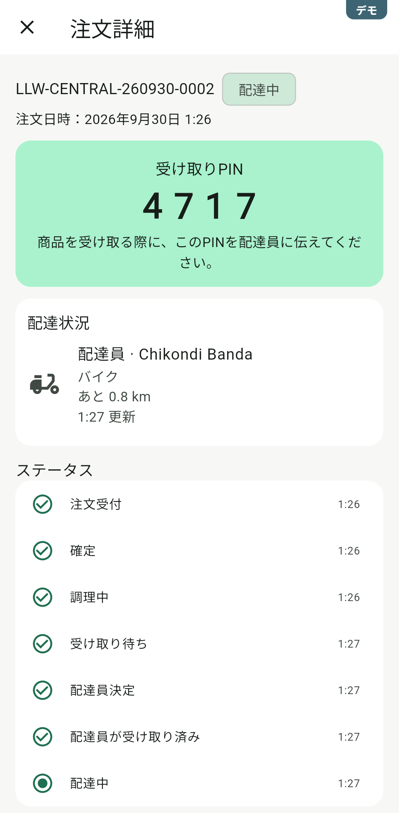
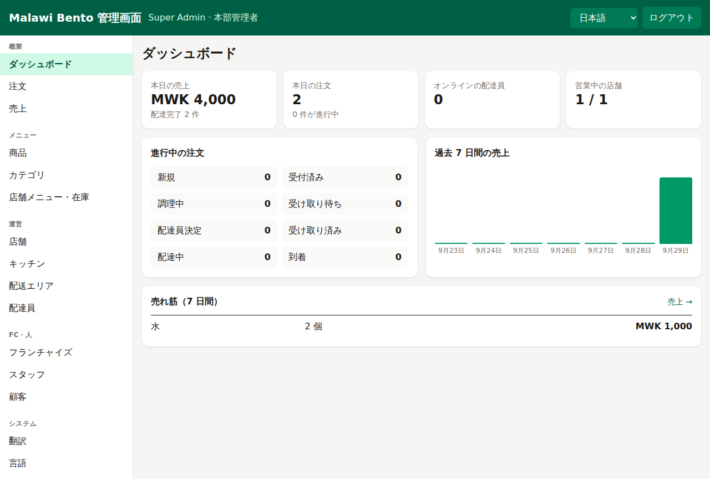
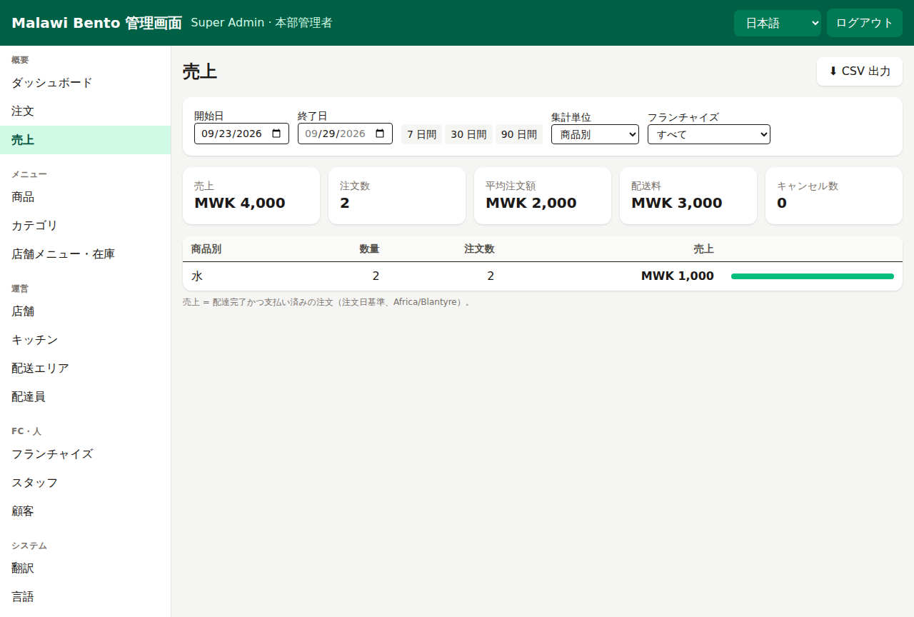
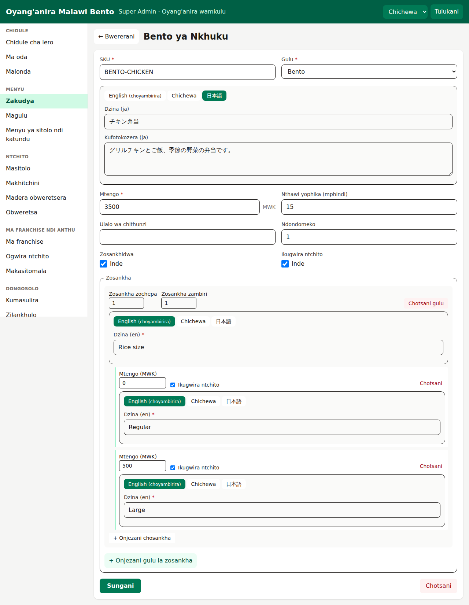

Lilongwe · Malawi · デモ版
Malawi Bento
マラウイ向けのお弁当デリバリーサービスです。お客様アプリをブラウザで体験できるデモを用意しました。スマホでそのまま開けます。
お客様アプリのデモを開く英語・チェワ語・日本語に対応。最初の読み込みは数 MB あります（2 回目からは速く開きます）。
試し方（約 3 分）
注文から配達完了まで
- 言語を選んで「続ける」
- 「お届け先を選択」→「現在地を使う」→「ここに届ける」
デモでは現在地がリロングウェ市内になります。 - お弁当を選んでカートに追加 →「レジに進む」
- 電話番号は
0991234567のような 9〜10 桁なら何でも OK（SMS は送られません）。認証コードは123456 - お届け先の名前と目印を入れて保存、支払い方法（Airtel Money など）を選んで注文
- 「支払う」→ 数秒で支払い完了 →「注文を見る」
- 画面を開いたまま待つと、調理・配達員の割当・配達中（地図の代わりに残り距離）・到着と自動で進みます
支払いに使う電話番号の末尾を 0000 にすると支払い失敗、9999 にすると支払い待ちのままになります（失敗時の画面も確認できます）。
画面
アプリと管理画面





このデモについて
本物との違い
- サーバーにはつながっていません。注文・支払い・SMS は実際には発生しません。
- 画面と処理は本物のアプリと同じもので、サーバーの代わりをブラウザ内で動かしています。商品データは本物の API から取ったものです。
- 入力した内容はお使いの端末のブラウザにだけ保存され、他の人からは見えません。
- キッチン画面・配達員アプリ・管理画面は、サーバーが必要なため今回のデモには含まれていません。